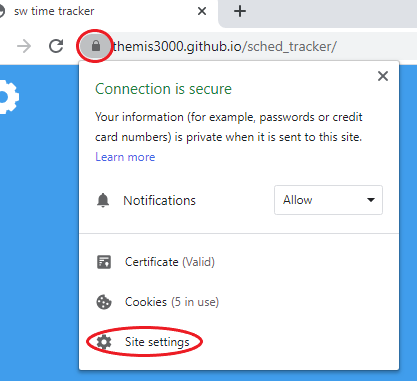
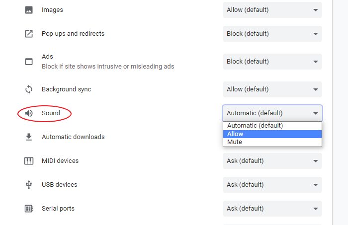
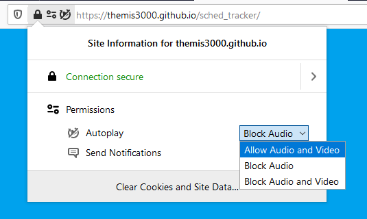

Chrome
Click on the lock symbol to the left of the url and click on site settings

Find "sound" in the list and set it to "allow"

Firefox
Click on the lock symbol to the left of the url and enable autoplay in the dropdown menu
